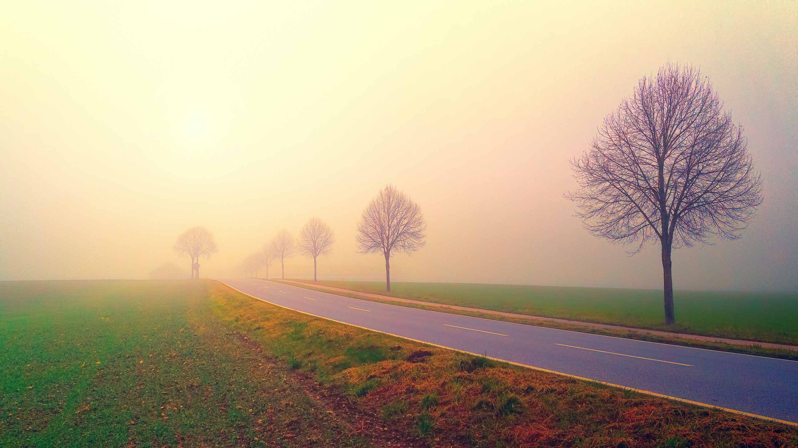

Ukraine collection
"As the stars that shall be bright when we are dust,
Moving in marches upon the heavenly plain;
As the stars that are starry in the time of our darkness,
To the end, to the end, they remain." - Laurence Binyon (1914)
When you buy an NFT from this collection, you support charities that help Ukrainian refugees in finding a new life.
The list of charities for this collection is the following:
Disasters Emergency
Committee
By donating to the Ukraine Humanitarian Appeal, you'll help DEC charities provide food, water, shelter and healthcare to refugees and displaced families.
By donating to the Ukraine Humanitarian Appeal, you'll help DEC charities provide food, water, shelter and healthcare to refugees and displaced families.
UNICEF
Since the beginning of the conflict in eastern Ukraine, UNICEF works to fulfill the core commitments for children in humanitarian action, including access to education, psychosocial support, water and sanitation, mine risk education, maternal and child health and HIV and AIDS services.
Since the beginning of the conflict in eastern Ukraine, UNICEF works to fulfill the core commitments for children in humanitarian action, including access to education, psychosocial support, water and sanitation, mine risk education, maternal and child health and HIV and AIDS services.
Red
Cross
Red Cross is providing lifesaving aid to those in need.
Red Cross teams have distributed more than 90,000 food and hygiene parcels to families on the move across Ukraine.
They delivered more than 32 tons of food, blankets, medicine, medical supplies, trauma kits and household items, assisted with the evacuation of people with disabilities and distributed critical care items to over 7,000 people seeking safety from shelling in bomb shelters.
Red Cross is providing lifesaving aid to those in need.
Red Cross teams have distributed more than 90,000 food and hygiene parcels to families on the move across Ukraine.
They delivered more than 32 tons of food, blankets, medicine, medical supplies, trauma kits and household items, assisted with the evacuation of people with disabilities and distributed critical care items to over 7,000 people seeking safety from shelling in bomb shelters.
The UN Refugee
Agency
UNHCR is urgently upscaling relief operations across Ukraine and in neighbouring countries to support fleeing civilians. Urgent needs include emergency shelter, relief items such as blankets, and psychological support – but all rely on voluntary donations.
UNHCR is urgently upscaling relief operations across Ukraine and in neighbouring countries to support fleeing civilians. Urgent needs include emergency shelter, relief items such as blankets, and psychological support – but all rely on voluntary donations.